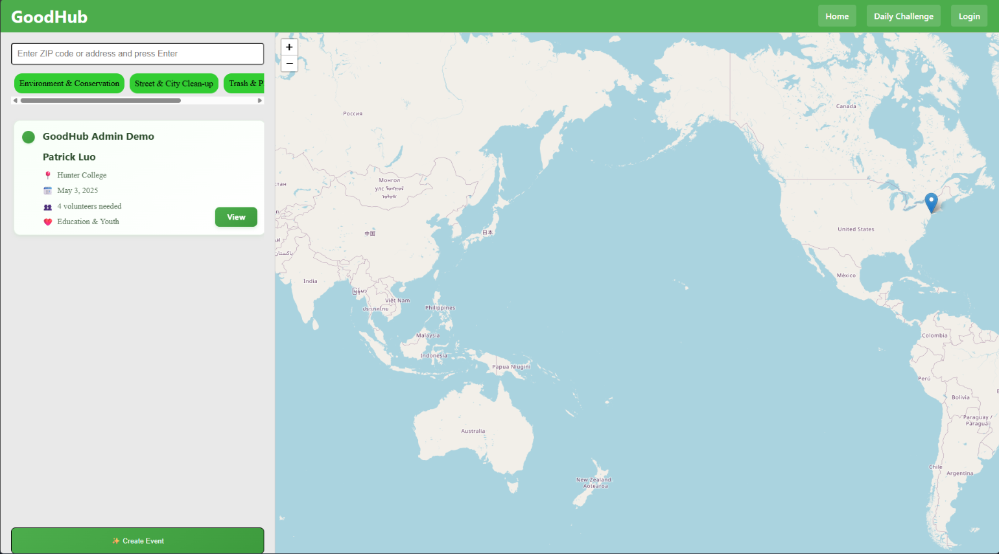

A web platform that matches volunteers to environmental projects near them, using an interactive map with geolocation filtering, live listings and an end-to-end sign-up flow. Awarded first place in the Environmental Track at HunterHack 2025.

Technologies
Overview
Local environmental volunteering is hard to find. Existing platforms bury events behind clumsy interfaces with no real-time updates.
GoodHub puts them on an interactive map — discover, join or create sustainability events, with live updates, profiles and event management.
Features
Leaflet map of volunteer opportunities with live location tracking and filtering.
Create and manage environmental events — description, date, location.
Join groups and build a network of environmental advocates.
Profiles tracking volunteer hours, events attended and impact contributed.
Filter by event type, date, distance and impact category.
Responsive across desktop, tablet and mobile.
Process
Hours 0-8
User research, wireframes, core feature set and technical architecture — plus the database schema and API endpoints.
Hours 8-32
React front end, Leaflet map integration, Flask REST backend, and user authentication over the database layer.
Hours 32-44
Filtering, live updates, profiles, the event dashboard and social features — then performance and responsive design.
Hours 44-48
Testing, bug fixes, performance tuning, and deployment for the hackathon demo.
Team
Full Stack Developer
Frontend Developer
Backend Developer
UI/UX Designer